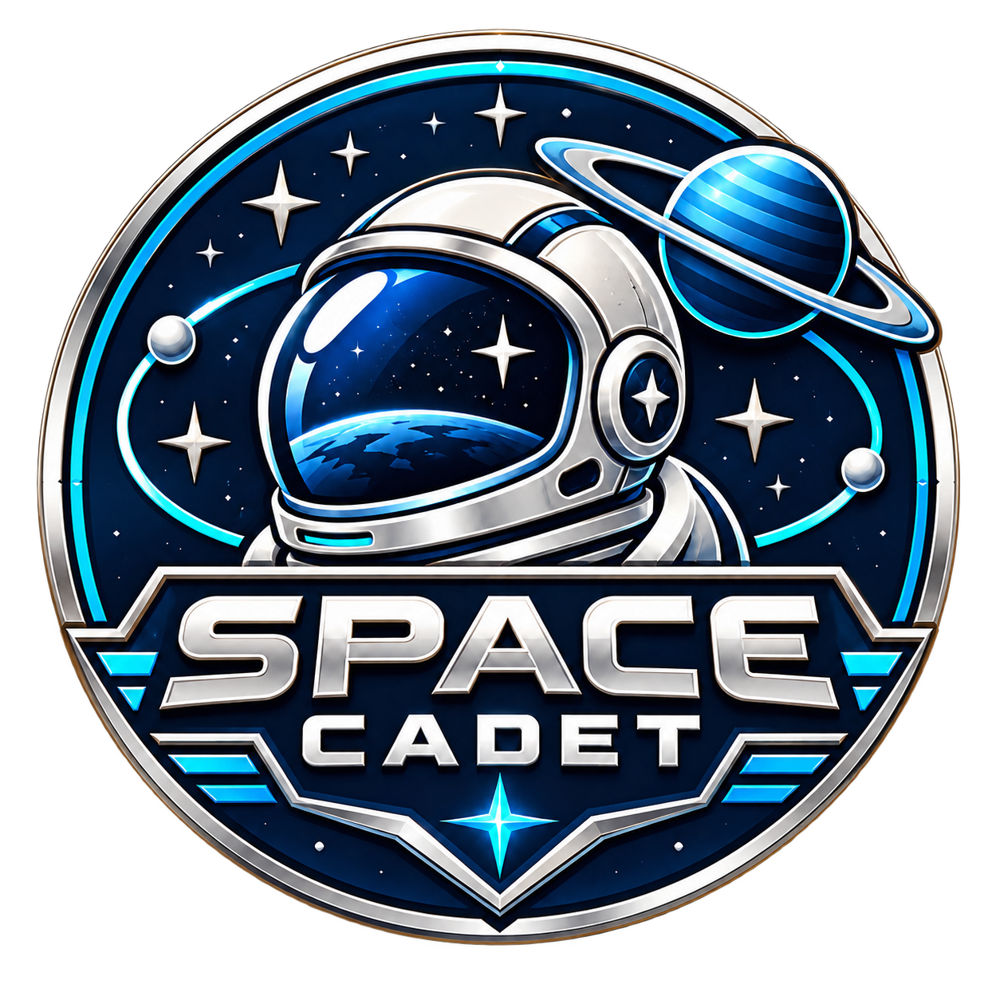

Sensor dossier
Official ESA data example loads from ESA when online.
Explore how Copernicus Sentinel and ESA Earth Explorer missions observe our planet across the electromagnetic spectrum. Scan wavelengths, inspect real ESA data examples, complete challenges, and earn the Space Cadet badge.
Drag from long radio wavelengths to short gamma rays. Mission cards glow when their sensors use the selected wavelength.
Teaching scale: each spectrum region is widened for interaction, while the wavelength/frequency readout is physical. Visible light is ordered correctly: red touches infrared; violet touches ultraviolet.
Move the scanner to discover wavelength matches.
Correct answers earn 10 points. Reach 60 to earn Space Cadet.
Earn 60 points by matching ESA missions, instruments, wavelengths and applications.
0 / 60

All data examples are loaded from official ESA image URLs. The buttons inside each dossier retain the original ESA mission, satellite-image and data-image pages, where image credits and licence terms are shown. An internet connection is required to load ESA-hosted imagery.
ESA assets have asset-specific credits and licences. Some are ESA Standard Licence; others are CC BY-SA 3.0 IGO or include additional permission requirements. Follow the source link shown with each image before redistributing imagery.